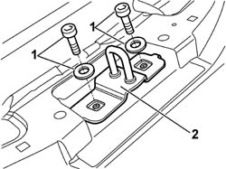
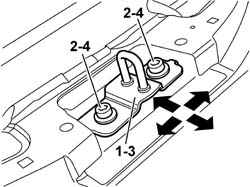

7015B18 TAILGATE LOCK STRIKER - R+R
- Path
- Procedures > 70 FITTINGS > 7015 TAILGATE/FLAP > 7015B TAILGATE LOCKING/OPENING DEVICES > 7015B18 TAILGATE LOCK STRIKER - R+R
- Kind
- repair procedure (removal / refitting; the operation number is the code)
- Applies to
- all engines; all production periods
- Interactive page
- https://sloeber94.github.io/elrnDB-aGt/en/#/125001819
Applies to: all engines; all production periods
 Removing
Removing
 Refitting
RefittingOp. 7040B22 LUGGAGE COMPARTMENT/LOAD PLATFORM MOULDING - R+R
1. Undo the bolts.
2. Remove the lock striker.

Applies to: all engines; all production periods
Refitting
RemovingCheck that the lock striker is not damaged.
1. Position the lock striker.
2. Screw in the retaining bolts without tightening.
3. Place the striker in the correct position using the bolt slots. Permitted adjustment movements are indicated by arrows.
4. Tighten the fixing bolts.
 | Fastening | Component | Ø | Value (daNm) |
|---|---|---|---|---|
- | Bolt | TAIL-GATE LOCK STRIKER | M6 | 0.8 |

Applies to: all engines; all production periods
Check that the striker and catch fit together properly and are aligned when the tailgate is closed.
Op. 7040B22 LUGGAGE COMPARTMENT/LOAD PLATFORM MOULDING - R+R.